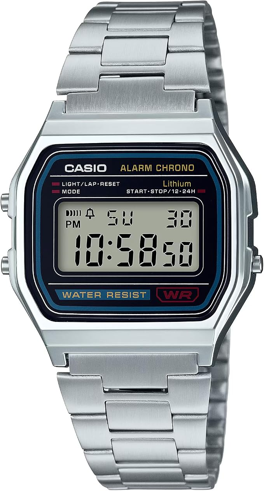
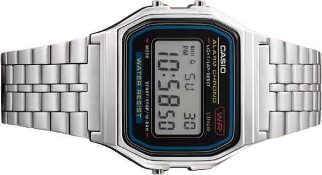
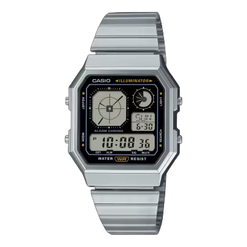
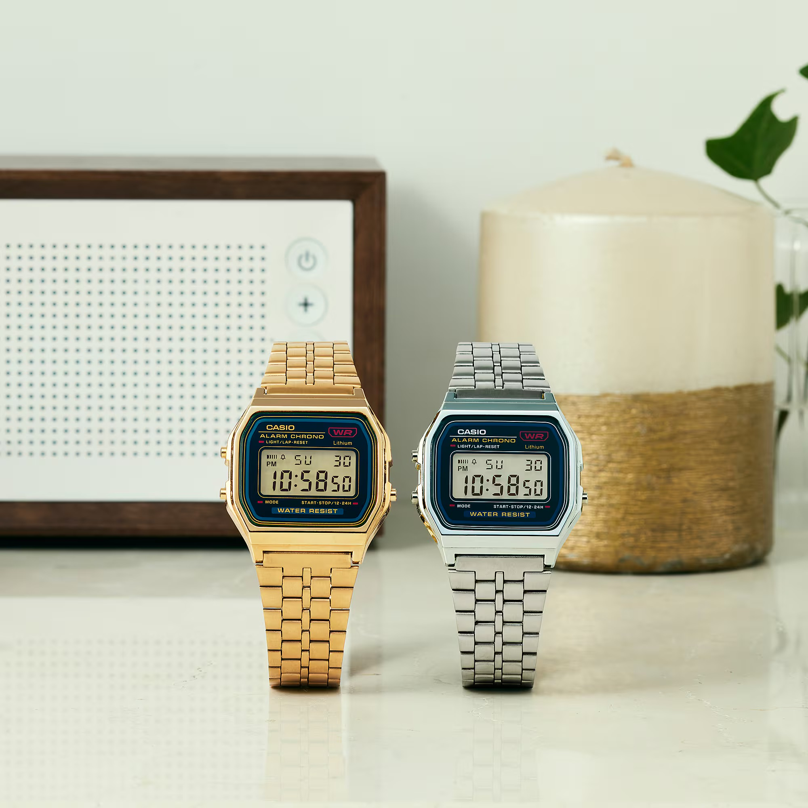
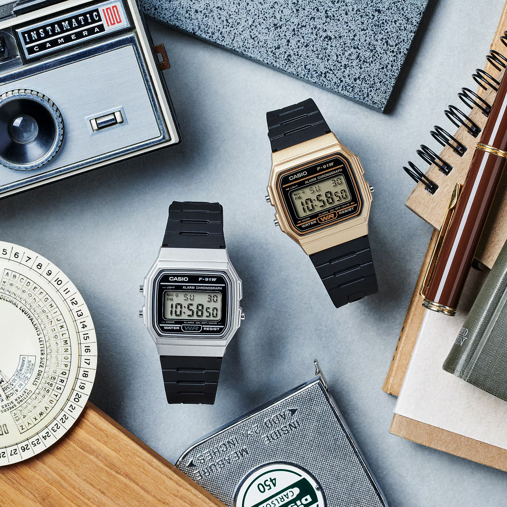
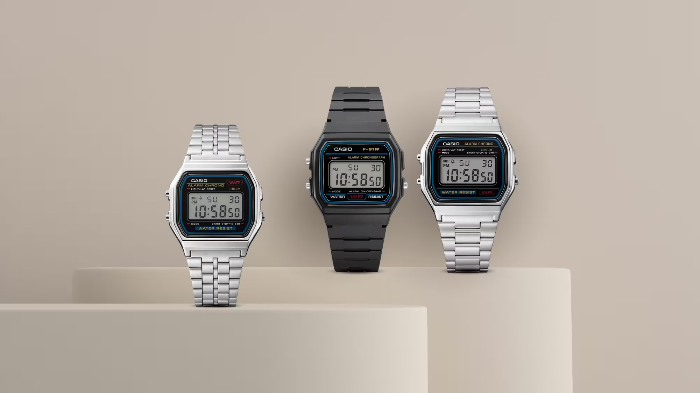

Casio

A130WE
$79.95
Multi-display digital timekeeping in a comfortable stainless-steel design.
- Daily alarm and stopwatch
- Adjustable stainless-steel band
A legacy on your wrist
Designed to deliver affordability and long-lasting reliability.

$79.95
Multi-display digital timekeeping in a comfortable stainless-steel design.

$79.95
A timeless digital favorite, finished with a polished metal bracelet.
Good design never needs to shout.
See the collection ↗Old soul. New perspective.
Everyday pieces, timeless character. Find the detail that feels like you.



